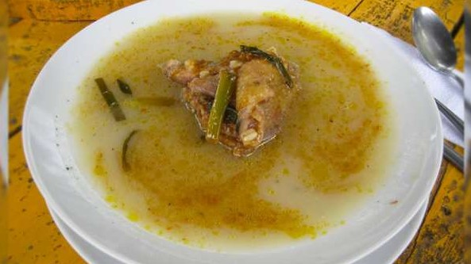
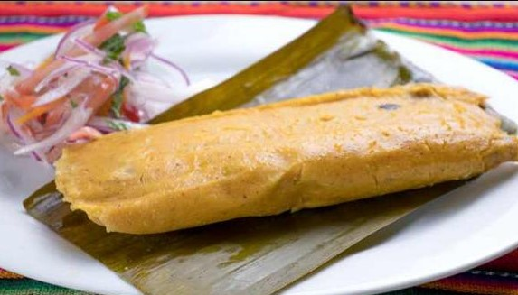
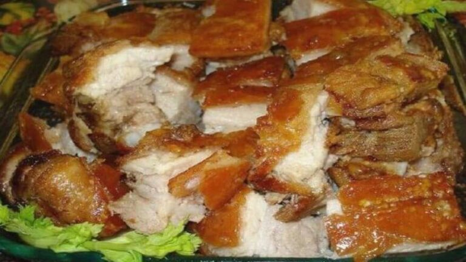
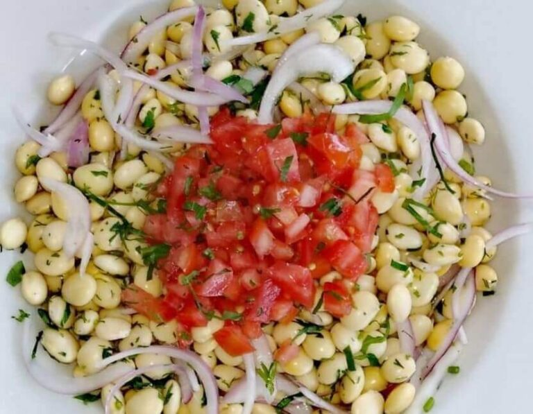
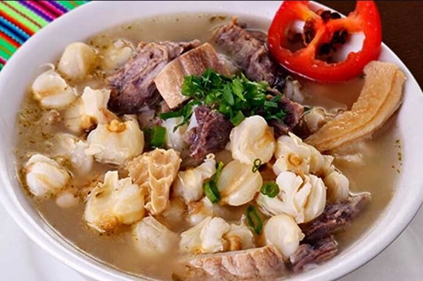
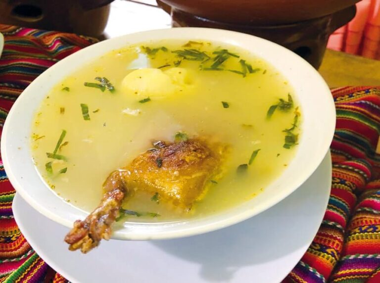
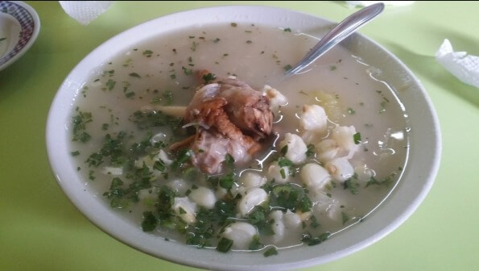
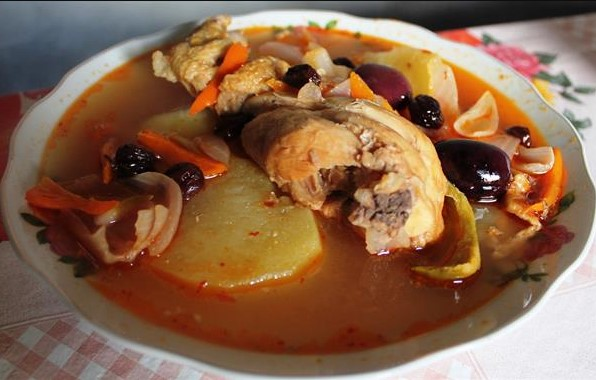
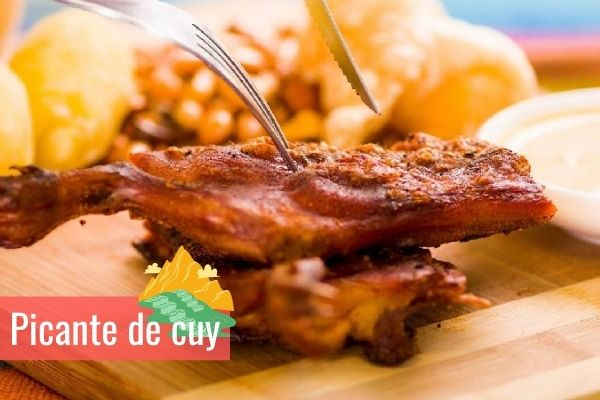

- Inicio
- Platos Tipicos
- Zonas Turisticas
- Danzas Tipicas
PLATOS TÍPICOS DE ANCASH
Ancash es la región peruana ubicada al norte de Lima Perú, casi siempre relacionada con el Callejón de Huaylas y el Parque Nacional de Huascarán. Siendo uno de los lugares mas atractivos . Sin embargo al llegar a la region nos encontramos con una variedad de potajes. A continuación te presentamos una lista con todos los nombres de los platos típicos de Ancash
1.Llunca Cashque
Es una de las recetas más populares de esta zona. En la antigüedad cuando las personas acudían a un acontecimiento se les servía como muestra de agradecimiento, luego se comenzó a comercializar hasta convertirse en un platillo favorito de la sierra.

Ingredientes
- Gallina(que se tierna y la cantidad de tus proferencia)
- Trigo resbalado
- Orégano seco o tostado
- Apio
- Sal
- Ajo en polvo o molido
- Perejil
- Ají panca molido
- Zanahoria
- Papas Yuangay
- Aceite de oliva
- Cebolla china
- Agua
La cantidad de ingredientes que uses dependerá de las porciones que desees preparar:
Preparación
- En una olla de barro agrega agua y las presas de gallina. Déjalas hervir con un poco de apio, para que adquiera sabor.
- Luego de remojar el trigo resbalado, debes agregarlo a la olla donde está hirviendo la gallina, para que se cocinen juntos.
- Al estar bien cocidos el trigo y la gallina, baja el fuego y agrega orégano. Preferiblemente, debes sacar el apio que habías colocado.
- En otro recipiente agrega los trozos de cebolla china, el ají panca, ajo y aceite de oliva para crear un aderezo.
- Luego de agregar el aderezo, debes dejar cocinar la sopa a fuego lento por unos 10 minutos aproximadamente. Pasado este tiempo, añade el perejil bien picadito y cocina durante 5 minutos más hasta retirarlo de la cocina.
2.Tamales de Ancash

Ingrecientes
- Maíz mote
- Cerdo picado en trozos pequeños
- Manteca de cerdo
- Ajo
- Pimienta
- Ajíes mirasol secos
- Cebolla
- Huecos ya cocidos
- Maní tostado
- Sal
- Aceituna sin pepa
- Hojas de choclo o plátano (soasadas)
Preparación
- Cocina el chancho (hasta que esté bien cocido)
- Luego de remojar por un día el maíz mote, debes molerlo o licuarlo, agregar la manteca de cerdo, sal al gusto e integrar estos dos ingredientes mezclando en una olla a fuego bajo, para crear la masa.
- Debes preparar el aderezo agregando en una sartén suficiente manteca para sofreír la cebolla, el ajo, el ají mirasol, sal y pimienta al gusto, a esto añade el cerdo, un poco de agua y baja del fuego.
- Sobre la hoja que hayas decidido usar, estira la masa, agrega en el centro el aderezo más aceitunas, trozos de huevo y envuelve hasta que quede cubierta toda la masa.
- Pon agua en una olla con un poco de sal y al hervir agrega los tamales.
3.Kunchi Kanka o cuchi canca

Ingrecientes
- Lechón
- Ají mirasol en polvo
- Vinagre
- Sal
- Pimienta
- Comino
- Ajos
- Maízen grano
Preparación
- Macera el cerdo luego de aderezarlo con ajo, sal, pimienta, vinagre, ají y comino, durante unas 24 horas.
- Coloca en un horno o asadera el cerdo hasta que esté bien cocido y dorado, en ese punto sabrás que está listo para servir acompañado de granos de maíz o ensalada verde preferiblemente.
4.Picante de Chocho

Ingredientes
- Tarwi o Chocho
- Papa sancochada
- Cebolla
- Culantro p perfil (el que sea de tu preferencia)
- Chanchita tostada
- Ajo molido
- Palillo (para agregar color)
- Aceite
- Sal
- Ají molido Picante
- Sazonador
Preparación
- Licúa el tarwi hasta que obtenga una consistencia suave, como una crema.
- En una sartén, debes agregar aceite y comenzar a sofreír el ají, la cebolla picada y los ajos, añadir sal, pimienta, palillo y sazonador al gusto.
- En el mismo recipiente agrega el chocho y las papas, seguidamente, mezcla bien hasta que se integran lo sabores.
- Deja hervir por unos 10 minutos y antes de bajar añade culantro o perejil, en trocitos pequeños.
5.Patasca Ancashina

Ingredientes
- Pata de res
- Mondongo bien picado
- Choclo en granos
- ají panca en polvo
- Cebolla
- Hierbabuena(ramas y hojas)
- Acerite (vegatal preferiblemente)
- Sal
- Ajos
- Perejil
- Agua
Preparación
- Agrega en una olla suficiente agua, las patas de res, el mondongo y los granos de choclo. Hierve por una hora aproximadamente, a fuego medio.
- Pica en pedazos pequeños la cebolla, el ajo, el ají y prepara una especie de aderezo, con sal al gusto.
- En la misma olla donde se ha cocido muy bien el mondongo y la pata de res, agrega el aderezo, así como la hierbabuena y el perejil. Revuelve hasta que se integren lo mejor posible, hierve por 5 minutos más y retira del fuego.
6.Caldo de cuy o Aca cashqui

Ingredientes
- Cuy (la cantidad de tu preferencia)
- Papas
- Arroz
- Hojas de muña
- Zanahoria
- Sal
- Agua
- Orégano
- Aceite
Preparación
- En esta receta no se usan a cabeza ni las patas del cuy, por eso, debes cortarlas y desecharlas. Luego, pica el resto del animal en trozos grandes.
- Pasa los trozos de carne por agua de sal para que esté más limpia.
- Fríe los trozos de cuy en una sartén, durante 5 minutos si es por el lado de la piel.
- En una olla con agua y arroz hirviendo y tras terminar de freír el cuy, añade los trozos de este, zanahoria, papa y hojas de muña. Cocina a fuego medio por unos 40 minutos.
- Antes de bajar del fuego, agrega una pizca de sal y un poco de orégano al gusto.
Caldo de cabeza de carnero

Ingredientes
- Arroz
- Cabeza de cordero
- Papas
- Agua
- Apio
- Sal
- Cebolla china
- Chuño blanco
- Perejil
- Pimientas dulces
- Orégano
- Cebolla
- Ajo
Preparación
- En una olla con agua coloca la cabeza del cordero (ya debe estar limpia y pelada), la cebolla cortada en trozos grandes preferiblemente, el ajo, la sal y las pimientas dulces. Debes dejarlo en el fuego hasta que la carne esté blanda.
- En una sartén, agrega un poco de aceite en el que vas a sofreír el ajo y la cebolla.
- Cuando ya la cabeza esté en un buen punto de cocción, debes agregar más agua, así como el ajo y la cebolla que has freído. Añade también el apio, el arroz y las papas. Tapa la olla y deja que siga hirviendo.
- Suma una taza de agua fría y el chuño cuando la papa esté casi cocida. En este punto debes colar el agua de la cabeza de cordero en el recipiente para que los sabores se integren y luego de unos minutos más en la estufa, estará lista para servir.
8.Chicha en Caldo

Ingrecientes
- Chicha (los litros de tu preferencia)
- Gallina (picada en trozos)
- Maní tostado entero
- Ají
- Comino
- Ajo
- Cebolla china
- Ajíes mirasol (enteros)
- Aceitunas
- Azúcar (pequeña dosis)
- Sal
- Tapa de chancaca
Preparación
- Para disminuir y retirar la cantidad de grasa del caldo, debes sofreír en una sartén a fuego bajo las presas de la gallina.
- Agrega en otro recipiente ajíes, ajo, el azúcar, la cebolla, y la chancaca, con un poco de aceite para sofreír. Cuando ya estén doradas, agrega los trozos de gallina hasta que todos estén bien cocidos.
- Añade la chicha a los condimentos para que hiervan todos juntos hasta que la carne esté suave.
- Finalmente, integra al caldo el orégano, los ajíes soasados y las aceitunas. Déjalos hervir por unos minutos y retira del fuego.
9.Picante de cuy Ancashino

Ingredientes
- 1 Cuy
- Agua
- Aceite
- Pimienta
- Comino
- Sazonador(ajino moto)
- 2 Cucharadas de sal
- 1 Ajo molido
- 3 Chucharadas maní tostado y molido
- 1 Cebolla picada
- 1 Taza de ají panca licuado combinado con ají mirasol licuado
- Harina para apañar
- 2 Papas negras sancochadas cortados en trozos
- 1 taza de caldo de Cuy
- Orégano
Preparación
- En primer lugar, se debe sancochar el cuy en una olla hasta que hierva el agua.
- Mientras, el cuy se sancocha y en otra olla se hará el picante. Colocando dos cucharadas de aceite, una cebolla picada y un ajo molido para luego mezclen todos los ingredientes, hasta que estos doren.
- Ahora, en la misma olla se agrega una taza de ají panca previamente licuado. Combinado con el ají mirasol, una pizca de pimienta y una pizca de comino y se deja dorar.
- Una vez ya dorado el aderezo se le debe agregar ½ de taza de caldo de cuy, tres cucharadas de maní tostado y molido. Posteriormente, se mezclan bien los ingredientes, evitando que queden grumos.
- Una vez ya todo mezclado, se agregan dos cucharadas razas de sal, una pizca de sazonador (ajino moto) y ½ de taza más de caldo del cuy.
- Se deja hervir esto por seis minutos y se procede a poner el cuy previamente sancochado en un plato para empaparlo con harina. Después, freírlo con abundante aceite.
- Se colocan el cuy frito y dos papas negras sancochadas cortadas en trozos en la olla con el picante preparado, y se mezclan bien los ingredientes.
- Se dejan cocinar por un minuto y luego se agrega un poco de orégano.
- Listo el cuy, se apaga y se deja reposar por cinco minutos y se sirve, con arroz y la ensalada de su preferencia.
Otras recetas típicas de la gastronomia de Ancash
10.Jamóm Ancashino
Es uno de los platos favoritos de los amantes de la carne de cerdo. Se caracteriza por su sabor potente y ahumado que se consigue al dejar macerar o secar la carne con especias, ajo, ají, pimienta, sal marina, entre otras, con el fin de que estas se adhieran a la carne para que absorba sus sabores.
11.Puchero
Es uno de los platos típicos de Ancash mas preferidos por los residentes de la zona, pero también de quienes la visitan. Consiste en un caldo al que se le agregan carnes, verduras y una gran variedad especias que realzan el sabor. Es una receta ideal para agregarla en el menú en los días fríos.
12. Ceviche de tarwi ancashino
Uno de los principales ingredientes de este platillo es el tarwi o chochos. En su preparación se obtiene una deliciosa mezcla de sabores debido a las cebollas, aguacate, tomate, perejil, zumo de limón y de naranja, azúcar, sal y pimienta. En cuestión de minutos tendrás un rico ceviche que podrás acompañar con unas ricas tostadas o tortillas.
Finalmente, en la gastronomía Ancashina existen otras recetas de las que se pueden aprender. Con el propósito de sorprender a los invitados, o simplemente gozar en familia. Entre los otros platos tipicos de la region de Ancash, también se pueden resaltar; la pachamanca, el takapi, y más.